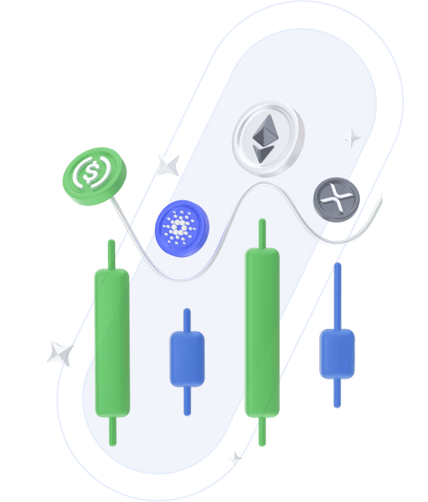

MT4 Web Trader and MT5 Web Trader for Brokers Who Want Clients Trading in Seconds
Not every client wants to download software. Some are on a work laptop where they can’t install anything. Some are using a borrowed computer. Some just…

Not every client wants to download software. Some are on a work laptop where they can’t install anything. Some are using a borrowed computer. Some just want to check a position quickly without opening a full desktop terminal. For all of them, a web-based platform is the easiest way in.
An MT4 web trader or MT5 web trader lets your clients trade straight from their browser. No downloads, no installation, no compatibility headaches. They open a link, log in and they’re trading, all under your brand.
What Is a Web Trader?
A web trader is a version of MetaTrader that runs entirely inside an internet browser. It connects to the same server and accounts as the desktop and mobile apps, so clients see the same balances, positions and history wherever they log in.
Same Account, Different Doorway
Clients don’t need a separate account for web trading. They use the same login details they use on desktop or mobile.
Works on Most Devices
Windows, Mac, Linux or Chromebook. If the device has a modern browser, it can run the web trader.
Why Web Trading Matters for Your Brokerage
Faster Onboarding
New clients can place their first trade minutes after funding, without a download step that some people abandon halfway through.
Fewer Support Requests
No installation problems, no “the app won’t open on my Mac” emails. The browser handles it.
Easy Access for Casual Traders
Newer or less technical traders often find a browser platform less intimidating than a full desktop terminal.
Always Up to Date
Clients don’t need to install updates. When the web platform improves, everyone gets the latest version automatically.
MT4 Web Trader
The MT4 web trader brings the core of MT4 into the browser. It’s a good fit for forex-focused brokerages whose clients already know MT4.
What Clients Can Do
View live prices, open and close trades, set stop loss and take profit levels, manage pending orders, view account history and use a selection of built-in indicators and chart tools.
Where It Fits
It’s ideal for quick trading and position management. Traders who rely heavily on custom indicators or expert advisors will still want the desktop terminal for that work.
MT5 Web Trader
The MT5 web trader offers a richer browser experience, with more instruments, more timeframes and more analysis tools.
What Clients Can Do
Trade forex, metals, indices, commodities, stocks and other instruments you offer. Use more chart types and timeframes, view market depth on supported symbols, and manage orders with a wider range of order types.
Where It Fits
It suits multi-asset brokerages and clients who want a fuller trading experience without installing software.
White Label Web Trading Platform: Your Brand in the Browser
A white label web trading platform should feel like part of your brokerage, not a third-party tool clients are sent off to use.
Hosted on Your Domain
Clients access the web trader through a link on your website or a subdomain you control, keeping them inside your brand.
Your Branding
Your company name and logo appear where the platform allows, and your server name shows at login, so clients know exactly who they’re trading with.
Linked From the Trader’s Room
Clients can jump from the client portal straight into the web trader with one click, making the whole journey feel connected.
Benefits of a Browser Trading Platform for Clients
From the client’s side, a browser trading platform is simply convenient.
No Installation
Nothing to download or set up. Open a browser, log in and start trading.
Trade From Anywhere
Home computer, office laptop, hotel business centre. Any device with a browser works.
Consistent With Other Devices
Positions opened on mobile show up in the browser instantly, and vice versa.
Secure Connection
Data travels over encrypted connections, and clients log in with the same secure credentials they use elsewhere.
How It Fits With Desktop and Mobile
The web trader works best as one part of a complete platform offering. Most active traders end up using a mix. Desktop for deep analysis and automated strategies, mobile for checking in throughout the day, and web for quick access when they’re away from their usual setup.
Offering all three, under one brand and one account, is what clients now expect from a serious brokerage.
Set Up as Part of Your Brokerage
With our white label, grey label and turnkey packages, web trading access is configured alongside your desktop and mobile platforms. We link it to your website and trader’s room, apply your branding and test it across common browsers before launch.
Let Clients Trade the Moment They’re Ready
A web trader removes one more barrier between a new client and their first trade. It’s quick, easy and works almost anywhere.
Whether you want an MT4 web trader, an MT5 web trader, or a fully branded white label web trading platform, we’ll set up a reliable browser trading platform your clients can access from any device. Get in touch today.
Frequently Asked Questions
Do clients need a separate account for the web trader?
No. Clients log in with the same account details they use on the desktop terminal and mobile apps.
Can clients use expert advisors on the web trader?
Expert advisors and most custom indicators run on the desktop terminal, not in the browser. The web trader is designed for manual trading and position management.
Which browsers does the web trader support?
It works on most modern browsers, including Chrome, Firefox, Safari and Edge. We test across these before launch.
Can I offer both MT4 and MT5 web traders?
Yes. If you run both platforms, clients can access each through the browser using the matching account.

Ready to Build Your Brokerage?
Tell us what you want to launch and we’ll shape the right MetaTrader, CRM, liquidity and operations stack around it.
Contact MetaGreyLabel